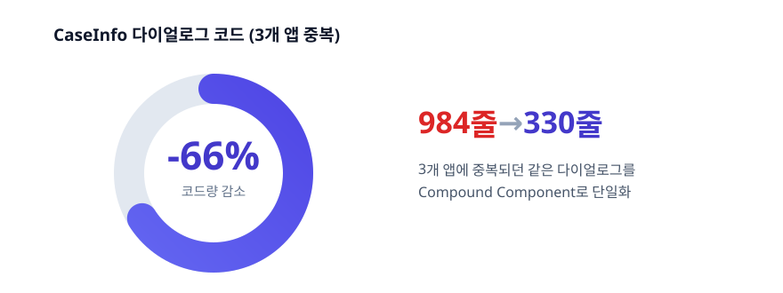
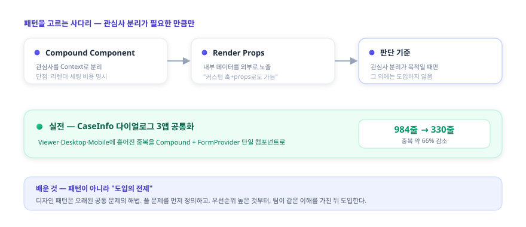

김진완 포트폴리오 | Frontend Engineer
About

2023년 9월부터 이마고웍스에서 AI 기반 치과 CAD/CAM SaaS인 Dentbird의 프론트엔드를 맡아, 대용량 데이터가 오가는 복잡한 화면을 만들고, 여러 레포에 흩어진 앱과 라이브러리를 하나의 모노레포로 통합하는 등 제품이 돌아가는 구조를 다뤄 왔습니다. 모노레포 도구는 새로 고르는 대신 기존 NX의 전환 이득이 이관·재학습 비용을 넘지 못한다고 보아 유지하는 판단을 했습니다. 상담사용에 준하는 데스크톱 연동 앱과 멀티 환경 일관 동작을 다뤄온 경험도 함께 담았습니다. 아래는 그 작업들의 배경·판단·회고입니다.
Skills
 React
React
 TypeScript
TypeScript
 Next.js
Next.js
 TanStack
Query
TanStack
Query  Three.js
Three.js
 Electron
Electron
 Playwright
Playwright
 Jest
Jest
 Docker
Docker
 AWS
AWS
 GitHub
Actions
GitHub
Actions  Datadog
Datadog
계정·구독 클라이언트 아키텍처 — FSD·컴포넌트 패턴과 도입 기준
2023.09 ~ 2025.07 ·
React · TypeScript · FSD
성과 — 3개 앱에 중복되던 CaseInfo 다이얼로그를 Compound Component로 단일화해 약 66%(984→330줄) 감소, FSD·디자인 패턴의 도입 기준을 팀에 정립

문제
계정·구독 클라이언트를 입사 초기부터 오래 맡았는데, 클라이언트 코드에
구체적인 컨벤션이 부족했습니다 — 언제 훅으로 빼고 언제
컴포넌트로 둘지, 파일을 어디 두고 중복을 어떻게 처리할지에 대한 명확한
기준이 없었습니다. components·hooks 같은
역할 단위 폴더라 만들기는 쉬웠지만, 그 훅이 어디서·왜
쓰이는지 한눈에 안 보였고 같은 목적의 코드가 분산돼
있었습니다. 폴더 구조를 여러 번 바꿔 봐도 기준이 없으니 곧 원형으로
돌아갔고, 에러 처리 기준도 없어 한 기능의 에러가 전체 페이지를
중단시키고 전부 unknown으로 일괄 처리됐습니다.
해결 — 구조·패턴·에러 처리를 함께 정리
마침 구독제로 전환하며 기존 로직과 분리된 기능을 새로 시작할 기회가 생겨, 팀과 공감대를 이뤄 처음으로 FSD를 도입했습니다.
- FSD로 폴더 역할과 도메인 데이터를 분리하고, API는
{Domain}API+ query key factory, DTO↔︎도메인은 mapper로 가르는 규칙을 정립했습니다. - Compound Component·Render Props로 관심사를 분리하되, 단점(Context 리렌더 비용, “커스텀 훅+props로도 된다”)까지 기록하고 관심사 분리가 목적일 때만 쓴다는 기준을 세웠습니다.
- 선언적 에러 처리로 전환 —
if (!data) return null방어를 ErrorBoundary로 바꾸되 모든 곳에 두지 않고 장애 허용 범위를 화면 단위로 설계했고, HTTP 200으로 오는 비즈니스 에러는BusinessLogicError로 코드별 분기했습니다. - 서버/클라이언트 상태 분리 컨벤션(TanStack Query data를 useState로 복제하지 않기 등)을 팀 규칙으로 정의했습니다.
이 기준을 적용한 예가 둘 있습니다. Compound Component — 3개 앱에 중복되던 CaseInfo 다이얼로그를 Compound + FormProvider 단일 컴포넌트로 추출해 약 66%(984→330줄) 줄였습니다. Render Props — 통신 방식(Custom Protocol↔︎HTTP)을 나중에 한쪽으로 굳히기 쉽도록 전환 지점만 추상화하되, 약간의 중복은 의도적으로 허용해 얼마나 추상화할지를 문제에 맞춰 골랐습니다.

회고
돌아보면 한계가 분명했습니다. FSD를 도입했는데도
widgets·pages처럼 UI 단위가 레이어에
섞여 “이 파일을 어디 넣지”가 안 풀렸고, 그걸 정하느라 작은
논의가 끊이지 않았습니다 — 위치 고민을 줄이려 도입했는데 정작 그 지점을
못 풀었습니다. 디자인 패턴도 “코드 일관성”이라는 명분으로 굳이 안 써도
되는 곳에 적용한 경우가 많았고, 제가 제안한 방향을 팀원들이 다르게
이해해 같은 패턴인데 쓰는 방법이 제각각이 되기도 했습니다. 가장 크게
깨달은 것은, 디자인 패턴은 오랜 기간 누적된 공통 문제를 푸는 해법인데
저는 그 패턴이 어떤 문제를 푸는지 정확히 이해하지 못한 채 도입했다는
것입니다.
그래서 지금은 기술을 도입할 때 가장 우선순위 높은 문제를 먼저 정의하고, 대안을 비교해 맞을 때만 팀이 같은 이해를 가진 상태에서 도입합니다. 효용만이 아니라 도입 비용(커뮤니케이션·마이그레이션·과도기 복잡도)까지 따져봐야 한다는 것도 이때 배웠습니다. 구조 자체가 나빴던 것은 아닙니다 — 그 코드는 이후 모노레포로 옮겨가서도 그대로 살아남았습니다. 배운 건 ’좋은 구조’가 아니라 ‘도입의 전제’였습니다.
케이스 목록 썸네일 로딩 최적화 — 지연 로딩·요청 배치·실패 캐싱
2025.10 ~ 2026.06 ·
React · TanStack Query · IntersectionObserver · Context API
성과 — 운영 중 발생한 무한 재요청 회귀를 공유 캐시 구조로 근절(재마운트돼도 중복 fetch 없음을 회귀 테스트로 고정), 썸네일을 지연 로딩 + 요청 배치로 최적화해 “N장 = N요청” 구조를 해소
문제
케이스 목록은 사용자가 가장 자주 보는 화면이고 썸네일이 수십 장 표시되는데, “N장 = 네트워크 N요청”이 되기 쉽습니다. 게다가 운영 중 깜빡임과 무한 재요청이 발생했습니다. 무한 재요청의 원인은 카드가 재마운트될 때마다 훅이 새로 생겨 같은 썸네일을 중복 요청하고, 403 같은 영구 오류도 새 URL로 계속 다시 호출하는 구조였습니다.
해결
IntersectionObserver로 viewport에 들어온 썸네일만 로드하고, 50ms 윈도우 안의 요청을 모아 한 번에 배치 요청하는 공통 훅(Context Provider 기반)을 만들었습니다.
무한 재요청은 캐시를 카드 바깥 Provider로 끌어올려 모든
카드가 공유하게 하고, 성공(4분)뿐 아니라 실패(10초)도
캐시해 풀었습니다 — 영구 오류를 짧게 기억해두면 재마운트돼도
네트워크를 다시 호출하지 않고 즉시 “No data”로 처리됩니다. 그 위에 단일
마운트 안의 onError 폭주를 억제하는 재시도 1회 클램프를
보조 장치로 두었고, “성공 시 errorCount를 리셋하면 같은 영구
오류가 다시 반복된다”는 이유로 의도적으로 리셋하지 않았습니다.
깜빡임은 로딩 상태를 첫 fetch에만 토글하고 재시도는 silent로 처리해
제거했습니다. 회귀 테스트로 “같은 Provider 안에서 재마운트돼도 중복
fetch 없음”을 검증합니다.

회고
무한 재요청은 재시도 횟수만 제한해도 멈출 수는 있습니다. 하지만 그건 증상이고, 진짜 원인은 카드가 재마운트될 때마다 훅이 새로 생겨 캐시가 소실되고 같은 오류를 다시 호출하는 구조였습니다. 그래서 재시도 클램프는 보조로만 두고, 캐시를 카드 바깥 Provider로 끌어올려 구조 자체를 고쳤습니다. 다만 재마운트 자체를 없애는 건 더 큰 공사라, 거기까진 가지 않고 공유 캐시로 우회하는 실용적 선택을 했습니다 — 증상을 덮을지 구조를 고칠지 그 사이에서, 비용 대비 효과가 가장 큰 지점을 고른 작업이었습니다.
설계에서 하나 더 신경 쓴 건 실패를 다루는 방식입니다. 보통 캐시는 성공만 담지만, 여기서는 403 같은 영구 오류도 짧게(10초) 캐시했습니다. 실패를 기억하지 않으면 재마운트마다 같은 오류를 다시 호출하기 때문입니다 — 성공뿐 아니라 실패도 하나의 상태로 보고 캐싱한 것이 무한 재요청을 끊은 핵심이었습니다.
프론트엔드 모노레포 통합 — 레포·환경 구성 일원화
2024.06 ~ ·
TypeScript · NX · Git Subtree · i18n
성과 — 별도 레포의 앱 2종·라이브러리 6종을 커밋 이력 보존하며 NX 모노레포로 이관, 잔존 설정이 유발하던 OOM을 진단해 빌드 태스크 11 → 9로 정리
문제
별도 레포로 분산돼 있던 클라이언트 앱·공용 라이브러리가 환경별 URL·도메인을 각자 다르게 구성하고 있었고, 공통 변경을 여러 곳에 반복해야 했습니다. 다국어 관리도 중복 업로드와 분산된 스크립트로 파편화돼 있었습니다.
해결
- NX 유지 + OOM 해소 — 모노레포 도구를 새로 고르는
대신 기존 NX를 유지했습니다. 전환 이득이 이관·재학습 비용을 넘지
못한다고 봤기 때문입니다. 잔존하던
webpack.config.js가 NX 자동 타겟 추론을 유발해 불필요한 빌드 산출물과 OOM을 일으키던 것을 진단해, 빌드 태스크를 11개에서 9개로 줄이고 OOM을 해소했습니다. - Git Subtree로 이관 — 별도 레포의 클라이언트 앱 2종·공용 라이브러리 6종을 메인 NX 모노레포로 옮겼습니다. 단순 복사가 아니라 커밋 이력을 보존하고 네임스페이스 충돌을 리네임으로 해소했습니다.
- 도메인 통합 라이브러리 — 환경별로 분산된 도메인·URL 구성을 단일 라이브러리로 일원화했습니다. 기준 도메인 하나에서 backend·gateway·테넌트 호스트 등이 한 곳에서 파생됩니다. (팀의 런타임 환경 분리·격리 재현 환경이 이 라이브러리를 기반으로 동작합니다.)
- 다국어 중앙화 — 중복 업로드 89줄과 14개 스크립트로 분산된 i18n 관리를 단일 스크립트로 모았습니다.

기준 도메인(통합/레거시) 하나에서 cloud·accounts·api URL이 모두
파생됩니다. 통합 도메인에서는 상대 경로로, 레거시에서는 환경변수 기반
절대 URL로 갈라지되 호출부는 UrlHelper.cloud() 한 형태로
통일됩니다.
회고
분산됐던 레포를 하나로 합치니, 여러 곳에 걸친 변경을 한 PR에서 한눈에 보고 리뷰할 수 있게 됐습니다. npm 패키지나 외부 모듈로 따로 배포되며 버전이 어긋나 생기던 불일치도, 빌드 타임에 함께 컴파일하는 방식으로 사라졌습니다. “무엇을 합칠까”보다 합친 뒤에도 흔들리지 않을 토대 — 도메인 통합 라이브러리 — 를 먼저 마련한 것이, 다음 단계인 격리 재현 환경의 기반이 됐습니다.
B2B 구독·결제 프론트엔드 — 예측 가능/불가능 에러 분리
2023.09 ~ 2025.07 ·
React · TypeScript · TanStack Query
성과 — 모든 에러를 한 덩어리로 처리하던 구조를 예측 가능/불가능 에러로 분리해, 한 기능의 실패가 전체 페이지를 중단시키지 않도록 개선(BusinessLogicError·ErrorBoundary 체계는 모노레포 이관 후에도 존속)
문제 — 모든 에러가 한 덩어리였다
일회성 크레딧에서 반복 구독으로 전환하는 시점에 구독·결제 화면(플랜 업그레이드·좌석 구매·취소·재개·쿠폰·결제수단·히스토리)을 전담했습니다 — 결제 인프라와 팝업 앱 기반은 팀과 함께였습니다. 그런데 당시 회사에는 에러 처리에 대한 정의가 없었습니다. 사실 지금도 그렇습니다. 모든 에러를 하나의 unknown으로 일괄 처리하다 보니, 한 기능에서 발생한 에러가 전체 페이지를 에러 화면으로 바꿨습니다. 케이스 리스트 조회 한 번 실패하면 SNB도 대시보드도 접근하지 못했습니다.
근본 원인은 예측 가능한 에러와 예측 불가능한 에러를 구분하지 않은 것이었습니다. 구분이 없으니, 서버가 의도적으로 내려준 비즈니스 에러든 정말 예상하지 못한 시스템 실패든 똑같이 폴백 UI로 처리돼버렸습니다.
해결 — 에러를 둘로 나누다
예측 불가능한 에러는 ErrorBoundary로 격리했습니다. 컴포넌트마다
분산된 명령형 방어 코드 if (!data) return null을
ErrorBoundary로 대체하고, 어디까지 실패를 허용할지를 도메인 의존 관계로
구분했습니다. billing 정보를 받지 못해도 결제 내역 조회·구독
취소·뒤로가기는 살아남습니다. 한 기능의 실패가 전체 페이지를 중단시키지
않습니다.
예측 가능한 에러는 코드별로 분기했습니다. 서버는 비즈니스 에러를
HTTP 200 · success:false · errorCode 형태로 내려줍니다.
이건 실패가 아니라 의도된 결과라 폴백 UI로 뭉뚱그리면 안 됩니다.
BusinessLogicError 커스텀 클래스로 throw하고,
.when(errorCode, action).otherwise() 체인으로 에러 코드별로
분기했습니다.

회고
에러 처리의 출발점은 정교한 도구가 아니라 에러를 구분 짓는 일이라는 걸 이 프로젝트에서 배웠습니다. 예측 가능한 실패와 불가능한 실패를 나누지 않으면, 아무리 잘 만든 ErrorBoundary를 두어도 결국 다 같은 폴백으로 처리됩니다.
이 구조는 모노레포로 이관된 뒤에도 BusinessLogicError와
withErrorBoundary HOC로 살아남았습니다. 다만 조직 차원의
에러 처리 정의는 여전히 없고, 무엇이 실패해도 무엇은 살아남아야 하는가를
결제 데이터 의존 관계까지 끊어내는 설계는 당시 출시 우선순위와 설계
역량의 한계로 끝까지 가지 못했습니다. 이 문제의식은 이후 관측·복원력
표준화에서 조직 차원으로 이어갔습니다.
또 패턴과 설계는 팀 전체의 공통 이해가 없으면 복잡도만 높인다는 것도 이때 배웠습니다. 에러 응답 형식만 해도 서버가 HTTP 200에 success:false로 내려줄지 4xx·5xx로 내려줄지부터 백엔드와 합의가 필요했고, 이 약속을 미리 맞춰두지 않으면 응답마다 어떻게 처리할지 다시 논의하는 비용이 계속 쌓였습니다.
웹·로컬 CAM 연동 Electron 데스크톱 앱 — Dentbird Linker
2024.07 ~ 2025.12, 이후 단독 운영 ·
Electron · React · TypeScript · Datadog
성과 — 좌표계·전달 방식이 제각각인 외부 CAM 12종을 단일 연동 인터페이스로 통합, 제각각이던 설치 감지 타임아웃을 3초로 맞추고 비차단 안내로 통일

문제
Dentbird에서 디자인한 보철 케이스를 사용자 PC의 외부 CAM 소프트웨어로 보내는 사내 연동 앱(Linker)을 단독 설계·운영했습니다. 연동은 파일을 전달하는 데이터 채널과 앱 설치·실행 여부를 아는 감지 채널의 두 축으로 나뉘는데, 이 케이스는 그 둘을 모두 다룹니다. 기존에는 케이스를 외부 CAM으로 보내려면 다운로드 → 압축 해제 → 수동 투입을 거쳐야 했고, 자체 로컬 서버가 없는 CAM은 연동 자체가 불가능했습니다. 게다가 Chrome의 LNA(Local Network Access) 정책이 웹→로컬 통신을 차단하면서, 권한 팝업을 놓친 사용자의 CS 문의가 늘었습니다. “지금 되는 방법”을 고르면 정책이 강화될 때 또 막히는 구조였습니다.
해결 — 대안 비교 후 장기 안정성 기준 선택
여러 통신 방식을 구현 속도가 아니라 장기 안정성 기준으로 비교했습니다.
| 방안 | 검토 결과 |
|---|---|
| WebSocket 로컬 서버 | 구현은 가장 빠르나 곧 LNA 적용 대상 → 1~2년 후 재차단될 단기 해법, 탈락 |
| HTTPS 로컬 서버 | 인증서·배포 부담 + 같은 LNA 사정 → 탈락 |
| Custom Protocol | HTTP 요청이 아니라 LNA 적용 대상이 아님 → 채택 |
Custom Protocol을 중간 레이어로 두어, 브라우저가 프로토콜로 Linker를 실행하며 세션 정보를 넘기면 Linker가 서버에서 파일을 직접 받아 변환 후 CAM을 실행하도록 재설계했습니다. 좌표계·전달 방식이 제각각인 외부 CAM 12종(프로세스 실행 방식 8종 + 포트 연동 방식 4종)의 차이는 하나의 변환·연동 인터페이스로 추상화했습니다.

운영 중 발생하던 정체불명의 ‘unknown error’ 모달도 추측으로 고치지 않았습니다. Datadog 로그 시퀀스로 초기 가설(요청 페이로드 문제)을 반증하고, 실제 원인이 변환 대상에 잘못 섞여 들어간 point cloud 파일임을 로그로 확정해 좁혔습니다.
명세가 없던 외부 export는 기존 동작 자체를 명세로
삼았습니다 — CAM으로 보내는 시점의 STL byte
snapshot(크기·sha256)을 그 자리에서 기록해 특성화(characterization)
테스트로 고정한 뒤, 구현을 그 테스트에 통과시키는 방식으로 안전하게
재구현했습니다. processExportSession이 전송 직후 임시 STL을
지우기 때문에, 단언 시점이 아니라 mock 구현 안에서 즉시 읽어 둡니다.
CAM 12종을 모두 설치하지 않고도 연동·자동 업데이트를 검증하려고, 케이스 상단의 Mock Server를 만들었습니다. CAM의 헬스체크·파일 핑 같은 엔드포인트와 자동 업데이트 응답을 흉내 내고, 성공·에러(500)·지연·타임아웃·부분 실패 시나리오를 버튼으로 전환해 Linker가 각 상황에서 어떻게 동작하는지 재현했습니다.
설치 감지 — 감지를 믿지 않는 방향으로
두 번째 축인 감지 채널입니다. 브라우저는 LNA 정책 때문에 로컬 헬스체크로 앱 실행을 직접 확인할 수 없어, 창 포커스 변화 같은 휴리스틱으로 추정할 수밖에 없습니다. 그래서 두 방향의 오탐이 있었습니다.
- false-negative — 앱이 이미 실행 중이면 OS가 기존 창으로 라우팅해 포커스 변화가 안 생겨 ’미설치’로 오인 → 설치돼 있는데 설치 모달이 뜸
- false-positive — 로딩 중 사용자가 DevTools를 열어 포커스가 빠지면 ’설치됨’으로 오인 → 미설치인데 다운로드 안내가 억제됨
감지를 완벽하게 만들려 하지 않고, 틀려도 사용자가 막히지 않는 쪽으로 정책을 통일했습니다. batch 2.5초·Linker 10초로 제각각이던 감지 타임아웃을 3초로 맞추고, 3초 내 미감지면 미설치로 간주하되 설치 안내를 항상 비차단(non-trapping)으로 표시해 어떤 경우에도 다음 행동(다운로드)이 가능하게 했습니다. DevTools로 인한 false-positive는 타임아웃으로 막지 못하는 한계임을 인지한 채 수용했습니다.

이건 1단계입니다. 근본 해법으로는 — Zoom·Slack 같은 설치형 서비스처럼 — 감지 판정 자체를 없애고 다운로드 안내를 항상 제공하되 설치돼 있으면 자동 실행되는 방식을 직접 제안해 기획·QA와 합의했고, 아직 착수 전입니다. 휴리스틱 위에 보강을 더하는 방식으로는 구조적 한계를 넘지 못한다는 것을, 같은 자리가 다시 열리며(reopen) 배웠습니다.
회고
처음엔 로컬 서버 방식이 핵심이었지만 정책 변화로 수명이 다했고, 직접 폐기한 뒤 Custom Protocol 기반으로 옮겼습니다. “되는 방법”이 아니라 “오래 버티는 방법”을 고른 판단이 이 프로젝트의 핵심이었습니다.
감지에서도 같은 태도를 얻었습니다. 브라우저 정책상 앱 실행 여부를 정확히 알 수 없어 휴리스틱은 늘 틀릴 수 있는데, 감지를 완벽하게 만들려 애쓰기보다 틀려도 사용자가 막히지 않도록 설계하는 쪽이 더 단단했습니다. 나아가 감지 판정 자체를 없애는 방향까지 제안하게 된 것은, 휴리스틱 위에 보강을 더하는 방식으로는 구조적 한계를 넘지 못한다는 것을 같은 문제가 다시 열리며 겪었기 때문입니다.
(Linker·Batch를 아우르는 LNA 대응 흐름은 팀과 함께였고, 본인 기여는 Linker 앱의 설계·구현·운영과 감지 정책 통일, 그리고 2단계 방향 제안입니다.)